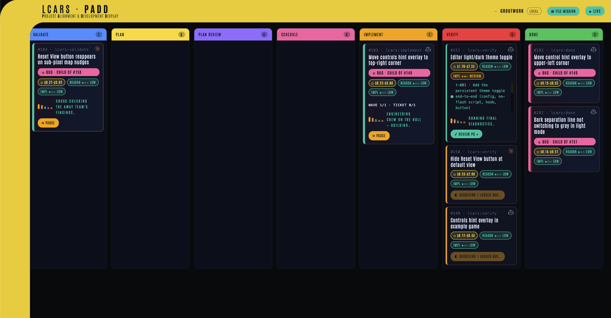
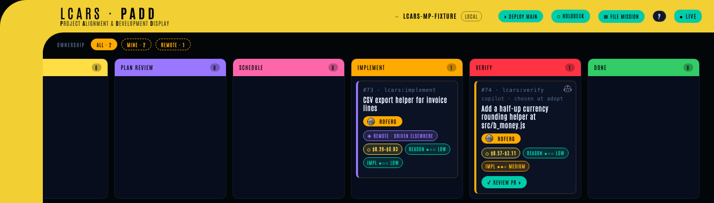
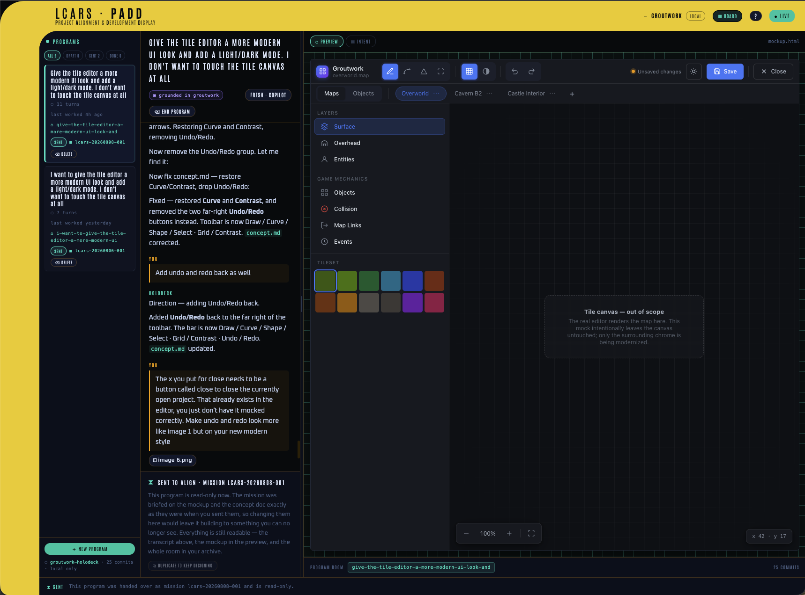
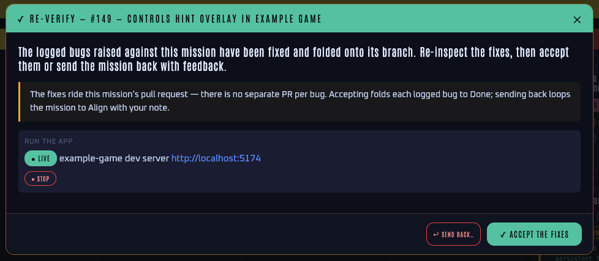
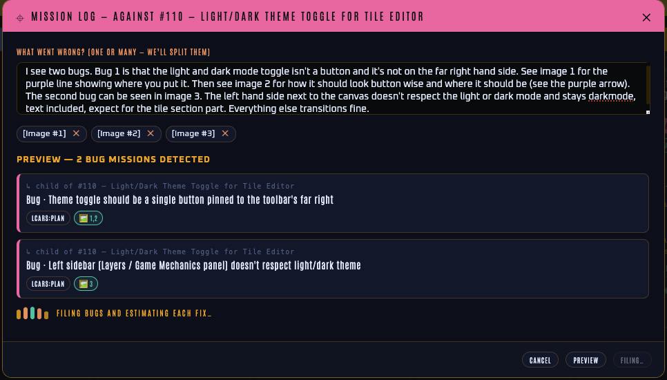

LCARS
Agentic Harness · Idea → Merged PR
What Is LCARS?
LCARS is a reusable AI harness that takes a human idea and drives it to a merged pull request. It is not a code generator, a chat interface, or a one-shot prompt. It is an orchestration system — a defined pipeline of LLM operations, automated checks, and human checkpoints — that turns intent into shipped software.
And it is a shared board, not a private one. A Mission belongs to a person, every card says which person, and everyone working the repo sees the same board — including the Missions running right now on machines they do not have. You cannot drive someone else's Mission by accident, and when one needs to change hands you take it over deliberately and on the record. LCARS is built for a crew, not for one operator at one keyboard.
The human provides the idea and the final judgment. The Harness does everything in between.

The Core Unit: The Mission
Every piece of work in LCARS is a Mission — a single human intent, whether a new feature, an improvement, or a bug fix. Missions are filed via a global CLI skill invokable from any repo. On entry, a free-form description is the only requirement.
- Gets its own isolated branch
- Is represented as a GitHub issue
- Belongs to a person — the issue's assignee on the forge
- Moves through defined Stages as a card on the Kanban Board
- Can be paused and resumed at any point
Missions can be active concurrently. Each is isolated on its own branch; merges happen sequentially when the human verifies and approves.
The Crew: Whose Mission Is Whose
A Mission's real, portable home is its GitHub issue, not the laptop that filed it — a second clone has no .git/lcars at all. That one fact is what makes the board shared: the forge already records who a piece of work is assigned to, so LCARS reads ownership from there rather than keeping a second, private answer that could disagree with it. The captain changes who owns a Mission the way he changes anything else about an issue — on GitHub.

ALL · 2, MINE · 2, REMOTE · 1.You are a person, not a machine. Identity is the (host, login) pair — never a hostname, and never a numeric id. Measured against a real forge, the same login carries a different numeric id on github.com than on a GitHub Enterprise host, and a display name can be null; the login is the only thing that is both stable and the string the assignee API actually takes. Every lookup and every cache key is host-scoped, so the same handle on two forges is correctly two different people. Two humans sharing one laptop are two people; one human on two laptops is one person.
Every card says whose it is. The owner rides in an LCARS pill with their avatar and handle. Yours reads as a solid block; someone else's as hollow and dashed — so ownership survives greyscale, a projector, and colour-blindness rather than depending on hue alone (the pair measures 8.18:1).
The lock is deliberately light. Reading is never gated — lcars status, lcars buddy and every board read work on anyone's Mission. An unassigned Mission is not locked: empty means unowned, not forbidden. And an identity LCARS cannot resolve never locks anything, because a false lock — telling the captain he is someone else — is strictly worse than the thing the lock prevents.
You can see work happening on machines you do not have. A Mission with no local copy is not missing from the board; it is read from the forge and rendered as a remote card at its real stage, with its cost and difficulty pills intact, marked ◈ REMOTE · DRIVEN ELSEWHERE. Its write controls are disabled and carry the same sentence the daemon would answer with: driven from another machine — adopt at Align/Verify to act here.
You can take one over. lcars adopt <issue#> — or the Adopt button on the card — rebuilds a Mission on this laptop from its issue alone: it reuses the Mission's own id (a new one would fork the Mission in two), rebuilds the spec and state from the issue body and the lcars:handoff envelope, reads the stage from the lcars:<stage> label, seeds a config if this clone has none, and carries the estimate across so the pills survive the moment the Mission becomes local. At Align it claims the Mission by assigning you on GitHub; at Verify it joins without claiming and resolves the open PR, so lcars approve and lcars feedback work with no further command. Any stage between those two ends is refused honestly: v1 portability is the two ends, and the stages in between keep their working artifacts on the laptop driving them. Adopt also asks which engine should drive it here — a laptop may only have one CLI installed — and records that a human chose, which is why #74 above reads copilot · chosen at adopt rather than silently inheriting.
You can filter the board by ownership. A strip above the columns switches between ALL, MINE, THEIRS, UNASSIGNED and REMOTE, each carrying its own count, so a busy shared board narrows to the question you actually have.
All of this has been driven on two genuinely cold clones against real GitHub — live pipelines, real merges, repeatedly.
Day Zero: A Project That Doesn't Exist Yet
Every Stage of the pipeline proves its work the same way: the ticket's tests are red on the parent commit and green on the tip. That proof is the spine of the whole system — and a project with no test runner cannot produce it. On such a repo LCARS was, quite correctly, unable to prove anything at all.
So on a repo with no foundation, LCARS does not show you an empty Kanban board. It replaces the board with a door.
Establish Vision is a short conversation, one question at a time. You describe what you want in a sentence; LCARS reads whatever is actually in the repo, asks a few questions, and then recommends a stack and says why — in terms of what you told it, not a generic template. Nothing is filed until you approve a recommendation you are free to refuse. Features you mention that are not the foundation are not discarded: they are recorded by name and deferred to normal Missions.
Accepting files an initialization Mission. It is a Mission like any other and runs the same pipeline, with one exception that exists precisely because the honesty rule cannot be waived twice: its first ticket — and only its first — may exit without a flip-flop, because it is the ticket that creates the runner there was none of. That waiver is recorded with a reason and surfaces at Verify. Every later ticket is held to the real gate, against the runner the first one established.
When you approve the Mission at Verify, the repo graduates: the test command it established is promoted into the repo's own config, normal Missions unlock, and the holodeck opens. Until that moment the foundation gate refuses to file ordinary work — not to be obstructive, but because a Mission filed on an unprovable repo is a Mission whose result nobody can trust.
The narrow rule matters: the door replaces the board only when the repo is foundationless and has nothing to put on the board. A repo with Missions in flight keeps its board.
The loop is proven end to end on JavaScript/TypeScript, Python, Rust, Go, Ruby and .NET. JVM is not proven: there is no JDK detection arm yet, so a Java or Kotlin project cannot establish a foundation this way.
Which engine drives it
The same screen asks which CLI you want: Claude Code or GitHub Copilot. Only engines actually installed on the machine are offered, and the choice runs both the conversation and every Stage of the Mission it files, then becomes that project's default so later Missions inherit it. It is asked once, at the moment the decision is actually being made, rather than buried in configuration.
Before the Mission: The Holodeck
A Mission begins with a description. But some work is far easier to draw than to describe, and a description of a screen — handed to a builder who never saw the picture — is a lossy encoding of something that only ever existed in the human's head.
The holodeck is where that picture gets made instead. It is a room on the viewscreen, reached by the ⬡ HOLODECK control in the band, where the human talks a mockup into existence with an AI, watches it render live as it changes, and then hands the drawing to a Mission that builds it.

The Program. The unit of design work is a Program, as the Mission is the unit of build work. A Program is a draft while it is being worked on and becomes sent — locked — once it has been filed as a Mission, so it survives as the record of what was actually handed over rather than drifting on afterwards.
A sidecar, not your working tree. Programs live in a sidecar git repo beside the project — <repo>-holodeck — with every turn committed. Nothing the holodeck writes ever enters the project's own tree. This is the same principle as .git/lcars/: a mockup is not the product, so it must be impossible to mistake for the product and impossible to commit to it by accident.
Grounding. A Program can start with a bounded, read-only pass over the real project, recorded in basis.md: its actual colour tokens and their values, the type scale, spacing and radius, and the shape of the components it already has — each named against the file it was read from, and with an explicit note of what could not be found. A mockup drawn on that basis arrives looking like it belongs in that product rather than inventing a design system that the Mission would then have to reconcile. The pass genuinely holds no write tool (on Claude the deny list is the load-bearing half, not the allow list), and it is exactly one turn; after it the Program switches to designing. A blank deck is the alternative, and spends nothing.
The room. Three panes: the Program list, the conversation, and a pane that toggles between the mockup rendered live — in a sandboxed frame jailed to the sidecar, so model-written bytes can never reach the rest of the machine — and an Intent view of what has been captured: the requirements in the human's own words, each attributed to the turn it was said in; what the mockup implies but has not settled, written as open questions rather than assumed answers; and what is explicitly out of scope. The mockup itself is one self-contained HTML file — inline CSS and JS, no build step, revised in place — so even a rich multi-screen prototype stays a single atomic artifact.
A Program also outlives the daemon. Reopening one replays its transcript into a fresh worker and says so plainly: it knows what was decided, it remembers nothing itself. The whole record is on disk in the room's transcript.md; the conversation is a durable artifact, not a live session that dies with the process.
The drawing survives into the tickets. A drawing that reaches Align and then evaporates at Plan has bought nothing. So when a Mission carries a mockup, Plan must account for it: every ticket declares whether it changes what the screen looks like, and a ticket that says it does must carry an acceptance criterion naming the mockup file — a mention in the description does not count. A plan that omits the declaration, or that declares no ticket visual while a mockup rides along, is rejected and re-planned. Missions with no mockup are validated exactly as before.
Duplicating a sent Program. Because a sent Program is locked, continuing a design means copying it: a new room carrying the mockup, the concept doc, the grounding, the attachments and the whole conversation, editable from the first turn, while the original stays precisely as it was handed over. The worker is told the history is context and not a contract — where what the human asks for now contradicts a decision in the record, what they ask for now wins, and the record is never used to argue back. Lineage is recorded on the copy and the inherited grounding is marked possibly-stale, since it describes the project as it was. The change list deliberately does not travel: it described the app as it was when the old draft was filed, and re-using it would be a lie about today.
Pipeline Overview
Feedback loops exist at four points: Research can return to Align if ambiguity runs too deep; Validate can escalate a scope change back to Align; Plan Review loops back to Plan until issues pass quality checks; and Verify can send a completed Mission back if the human isn't satisfied.
The Pipeline
1Align
The human and an LLM get on the same page. This is a structured grilling session — not a chat — where ambiguity in the idea is surfaced and resolved. The output is a PRD (Product Requirements Document) that becomes the canonical spec for the Mission.
The Align stage adapts to complexity. A small bug produces a thin PRD in minutes. A complex feature takes longer. If downstream stages reveal that the PRD was underspecified, the Mission loops back to Align with that context baked in.
Park now, grill later. Align has two entry modes. The default is grill-first: you describe the idea, the interview runs, and the Mission files once its PRD exists. But an idea often arrives when there's no time to think it through — so a Mission can also be parked: filed from just an engine and the raw idea text, with the mission directory and GitHub issue created immediately and the card dropped into the Align column in a pre-PRD standby state. A parked Mission has no PRD, no type (feature-or-bug comes from the grill), and no estimate; it is never runnable and the driver never auto-picks it — it simply waits, visibly marked awaiting alignment, until you have a moment. Starting the grill later (from the CLI or a one-click board action) runs the same warm interview seeded with the parked idea and completes it in place: the PRD is validated, the issue is retitled and re-bodied with a type label added, the estimator runs, and the result is indistinguishable from a grill-first filing. Backlog fast; grill when ready.
For a complex Mission, Align also records high-level engineering ADRs (Architecture Decision Records) alongside the PRD — the framework, architecture, and data-shape decisions, each with its rationale and the alternatives weighed. A trivial bug gets none. The ADRs exist so the downstream cold workers inherit the architectural frame instead of silently re-deriving it and taking wrong turns. Align seeds them; Validate refines them when research changes a decision. They are declarative facts every later Stage may read — except the Research Agents, who stay deliberately context-free.
When the PRD (and ADRs) are finalized, Align runs one more cold worker: an estimator. It reads the finished spec and inspects the real codebase, then reasons like a senior engineer about the whole problem — the kind of problem it is, how the change evolves the codebase, its blast radius, and what it sets up for future scale and reliability. Code size is one signal, never the deciding one. From that it produces two independent criticality scores — reasoning/planning and implementation, each low/medium/high — and from those assigns each downstream Stage a model tier (Sonnet or Opus), concentrating the expensive tier where mistakes are costliest (the reasoning and the implementation) and keeping routine Stages cheap. It also emits a token-grounded cost estimate for the Mission, rendered in the active CLI's native billing unit. All of this — scores, per-Stage model mix, cost, and the estimator's rationale — is written into the GitHub issue and the CLI readout for the human to review, and the human can override it in plain language when kicking off the run ("use Opus the whole way through", "use Opus for implementation", "keep reasoning cheap"). The estimator never blocks filing: if it can't run, the Mission still files and every Stage falls back to its default model. See How it runs for how the tiers reach the workers.
2Research
The Harness generates up to 20 questions based on the PRD — design choices, product considerations, or engineering decisions that need clarity before work begins.
Each question goes to a Research Agent — a stateless LLM worker with access to the codebase and the web. Agents work in parallel with no access to the PRD or each other's findings. Their only job is to return a recommendation and 2–3 supporting points.
If more than 20 questions are needed, the Harness explains why and gives the human the choice to override or return to Align so the PRD can be sharpened.
Grounding — Research for a logged bug. A bug filed via the Mission Log (against an existing parent Mission) does not run the question fan-out. Instead Research runs in a grounding mode: a single bounded, read-only worker anchors the bug's free-form symptom to the existing code it is about — reading the parent Mission's PRD, plan, and delivered code — and records which existing files and symbols the fix must modify, explicitly forbidding a parallel duplicate. It never escalates. This is what stops a casually-worded bug ("the icon is missing when no game is open") from being "fixed" by building a new control beside the real one instead of changing it. The logged bug then flows the full pipeline (Research → Validate → Plan → … → Verify); only Align is skipped. Any screenshots pasted with the bug report are threaded into the grounding worker by absolute path, so it anchors the symptom against what the captain actually saw, not just the words.
3Validate
A Validator LLM reviews all Research Agent responses against the PRD. It synthesizes recommendations into a plan, resolving conflicts and making implementation decisions where it can.
The Validator escalates to the human only when a finding implies a scope or direction change — something that would change what gets built, not how. Implementation decisions stay with the Validator. Strategic decisions come to the human. When a finding overturns an architectural decision, the Validator updates the engineering ADRs Align seeded, so the recorded frame stays current rather than going stale.
4Plan
The validated plan is decomposed into small, independently testable GitHub issues. Each issue is a vertical slice of full-stack functionality that owns one cohesive, user-observable behavior — cohesion is the primary slicing rule, not a line count.
Size is the secondary guardrail, measured as total comprehension load rather than net-new lines: the existing code the implementer must read (estimatedReadLoc), the issue's test suite (estimatedTestLoc), and the net-new production code (estimatedNewLoc). Their sum targets a tunable comprehensionBudget (default 1200) — the real constraint is keeping each issue within the LLM's effective working window, and the same diff is trivial against a blank file but hard against a large one. So net-new floats while the total stays bounded: greenfield issues run generous and tighten as the codebase grows. The budget is a planning target, not a hard reject — an issue may exceed it when a large existing file makes the read load unavoidable; what is not allowed is exceeding it by bundling two behaviors. The output feeds into Plan Review before any scheduling occurs.
5Plan Review
A fresh LLM session — with no access to the planning conversation — audits every issue against a fixed set of quality criteria before anything is scheduled:
- Vertical slice — does it touch multiple layers end-to-end, not just one horizontal layer?
- Size — is the total comprehension load (read + test + new code) within
comprehensionBudget? Over budget is an objection only when it comes from bundling two behaviors; load from an unavoidably large existing file is acceptable. - Coupling — can each issue's acceptance criteria be satisfied without changing behavior another issue's tests already pin? If satisfying issue A requires modifying behavior issue B locks down, they are coupled — the reviewer objects and names the behavioral seam to re-slice along. This is the real meaning of "too big": a sub-100-line issue can still be dangerously coupled, so coupling is a first-class reject reason on equal footing with the others.
- Slice pressure — a per-ticket heuristic (declared acceptance criteria, new files, and breadth of touched directories) flags a ticket that may hide a whole surface behind a simple title. The reviewer must reject a ticket whose title conceals multiple behaviors or whose scope silently omits part of the surface it claims — a "migrate all the chrome" ticket that leaves a file unthemed is an under-slice. A soft signal, never a mechanical size-reject; the budget stays a planning target.
- Testability — is there a clear, observable acceptance criterion?
- Explicit dependencies — are all dependencies on other issues captured in the graph?
If any issues fail, Plan Review returns the full set with specific objections — "issue #3 is a horizontal slice of the data layer, split it" — and the Plan stage must revise. This loop repeats until all issues pass. After three rounds without a clean plan, Plan Review escalates to the human with the unresolved issues flagged.
The reviewer's independence is deliberate: the same LLM that planned the work should not also grade it.
6Schedule
The Harness builds a dependency graph across all Plan issues and groups them into sequential Waves. Issues within a Wave are independent and run concurrently. The next Wave begins only when all issues in the current Wave are complete.
Each ticket is opened as a GitHub sub-issue nested under the Mission's own issue, so the board renders the Mission with its tickets beneath it rather than a flat pile of look-alike cards. A Mission that plans to a single ticket skips the redundant sub-issue and reuses its own issue — with one ticket there is nothing to schedule and nothing to duplicate.
7Implement
Each issue in a Wave is handled by one unified TDD worker — a single cold session that writes both the tests and the code:
The worker owns the ticket end-to-end. It writes failing tests, implements against them, runs the suite as often as it wants, and authors tests in-tree at the repo's own convention so they ride into the PR. It may adapt an existing test the ticket genuinely invalidates, but every such edit must be declared, with a reason, in its result.json — an undeclared test change voids the ticket. Behavioral tests describe what the system does, not how, and only the objective residue of the criteria: placement, visibility, state, persistence, a stated property. The worker never invents a numeric proxy for a preference word ("unobtrusive", "looks right") the captain didn't state; subjective qualities are left to the human's eyes at Verify.
Why one worker instead of the old two-agent split? Quality does not come from a second agent's judgment — an LLM rewarded for a green suite will game whatever contract another LLM writes. It comes from proof moved out of any worker's judgment into the deterministic driver: mechanical, post-hoc gates the harness runs after implementation, against git itself. The parent commit is the snapshot; fail-on-parent / pass-on-tip is the proof. That removes the split's structural failure mode — a separate test-authoring agent that wrote failing tests against code that didn't exist yet, couldn't iterate against reality, and stopped the whole ticket dead when it failed.
Within a Wave, independent tickets build concurrently — each unified worker runs in its own isolated git worktree off the Mission branch, so parallel file writes and test runs never collide. As a ticket goes green its commit is replayed serially onto the Mission branch in plan order, so the observable history is unchanged: exactly one commit per ticket, in order. When two tickets in the same Wave touch the same file, the second can't replay cleanly onto the first, so the Harness rebuilds it serially on the current tip — re-running the one worker against the updated tip, its proof gates re-proving on the new base — so a fully-overlapping Wave degrades gracefully toward serial and every ticket's change still lands, never silently dropped. A bounded concurrency cap (LCARS_MAX_PARALLEL) keeps a wide Wave — and the Research fan-out — from spawning unboundedly.
To keep each cold worker from re-exploring the repo from scratch, Plan and Schedule attach a per-ticket context manifest — the relevant files, their interface signatures (skeletons, not bodies), and the ADRs the ticket touches — and the Harness maintains a durable repo pack (how to run the tests, the conventions, an architecture summary) refreshed each Wave. The unified worker reads these instead of cold-walking the tree, and never reaches a Research Agent.
As each ticket goes green and commits, its sub-issue is relabelled lcars:done and closed — so the board reflects real per-ticket progress while a Wave is still running, instead of a pile of open issues that only clears at the end.
- Flip-flop gate — the ticket's new and changed tests must fail on the parent commit and pass on the tip. The Harness runs them scoped, twice: green in the worker's worktree, then red in a disposable scratch worktree at the parent. Order-independent and mechanical, immune to a prompt that talks its way to green. Which copy the parent leg runs depends on the file: one that is new at the parent is staged in, and its red proves the test depends on the change; one that already existed runs the parent's own committed copy, so its red proves that file was genuinely failing before this ticket — which is what makes an honest repair of a test another ticket broke provable at all. One check guards that path, and it reads no source: the runner must not execute fewer tests on the tip than it did on the parent. A source-reading guard was built for the rest — could a repair have quietly deleted coverage? — and then abandoned: five successive reviewers broke it at a new token, and its false-fails re-created the very loop the repair path exists to end. So the Harness does not claim a repair was honest. It states what it established, states plainly that when the parent's copy was dead at import it executed nothing and the count check therefore proves nothing there, and surfaces every repaired file at Verify for the human to read the diff — backed by the declared-edits contract. What is not at risk is the acceptance bar: weakening a test that PASSED on the parent is caught by the parent leg itself. A leg whose runner announces it collected nothing is inconclusive, never a pass. A compile/resolution failure on the parent, caused by the change's own new symbols, counts as a legitimate red.
- Declared-edits contract — the worker may edit an existing test the ticket genuinely invalidates, but every edit must be declared with a reason in
result.json. The Harness diffs the tests against the parent commit (the commit is the snapshot); an undeclared test change blocks the ticket, naming the file. Declared edits ride to Verify as a first-class contract-amendments readout, and a pre-merge check re-audits that no committed test drifted without a ticket declaring it. - Quality floor — a ticket must carry at least one new/changed test that actually asserts something. A genuinely behavior-free ticket may declare
flipFlop: "not-applicable"with a reason; that carve-out is recorded and shown at Verify, the flip-flop gate is skipped for it, and the declared-edits and full-suite gates still apply. - Full-suite green gate — passing a ticket's own tests is not enough; its commit must also leave the entire repo suite green, so one ticket can't silently regress another. A cross-ticket regression fails the Wave loudly instead of slipping through to Verify. Every ticket's own recorded tests are re-run, so the gate names the ticket that authored each failing suite and hands the reconcile there — re-decided each self-heal round — and where ownership can't be resolved the brief says so instead of naming the last ticket built as if it were the culprit.
These live in the deterministic driver, because an LLM rewarded for a green suite will otherwise game the contract. No worker fails terminally on quality: a gate rejection re-spawns a fresh worker carrying the gate's verdict, up to three sessions, then parks the ticket awaiting a human — with the failing gate named — never a stage-stopping crash.
- Runner preflight — the Harness probes the ticket's target package before the worker is spent. A runner that cannot launch is a distinct, truthful verdict — "cannot run tests here" — that escalates or self-heals; it is never mis-blamed on the tests, and it never burns a session on something no retry can fix.
- Declared test setup — when a package has no runner but the repo demonstrably tests elsewhere, the worker is invited to declare the missing setup: new config files plus a package-manager install, evidence-gated (no observed gap, no invitation) and whitelist-bounded (ADD-only, never
src/, never an existing file). The Harness applies it and verifies by probing, never by exit codes — a silent no-op install is healed by force-relinking the tree — and the honest fail-first transition (runner dead → suite red → green) proves the setup works before any code ships. - Test landscape — a setup that carries a ticket to a verified green is recorded to
.git/lcars/test-landscape/: a durable, proven fact about how that package tests, written only after the gates confirmed it, so the repo's testing knowledge accretes mission by mission instead of being rediscovered. - Verdicts, not choices — rejection feedback checks the repo per unresolved import and states the answer: "this module exists at
<path>, fix your import" versus "no such file anywhere, you must stub it" — so a weaker model follows a fact instead of guessing between remedies. - The toolchain is detected, not assumed —
lcars initrecognizes the repo's stack from its markers (Rust, Go, Python, JS/TS, and — for failure legibility — .NET and the JVM) and seeds per-stack defaults, warning rather than guessing when the markers are ambiguous. The flip-flop gate's scoped runs are expressed in each runner's own idiom: a directory scope for JS/Python,cargo test --testfor Rust,go test -runfor Go. So a compiled crate or package — whose tests live inside it and can't be pointed at an external directory — still proves fail-on-parent / pass-on-tip and rides its test along at the stack's own convention (tests/*.rs,*_test.go), never faking a green on zero tests; and acargocompile error or a Go "cannot find package" is named as the compile/resolution failure it is. Adding a stack only makes the gate more precise — it never loosens it.
8Verify
When all Waves are complete, the human reviews the Mission — reading the diff, running the app locally, testing the golden path. The human either approves (triggering PR creation and merge) or sends feedback that re-enters the loop.
Running the app is one click. lcars launch <mission> [hint] — and the ⚡ RUN / STOP controls on the viewscreen's Verify dialogs — check the Mission's branch out into a disposable detached worktree, spawn a launch-role cold worker that discovers how to start the app (it inspects package.json / Makefile / README and reports the exact command — it never starts anything itself), then start that command detached with the Harness owning the whole process group. A launch.json record drives both the CLI readout and the board's state (launching → running → stopped), the optional hint picks the right target in a multi-app repo ("the example game", "the editor"), and each Mission launches its own instance — so two Missions' builds can run side by side for comparison. Stop kills the process group and prunes the worktree; failures are plain English, never a stack trace. The captain's own checkout is never touched.

✓Done
The human requests a PR. The Harness opens it with a body that summarises the Mission for a reviewer — a user-facing summary above the technical detail and a per-Wave manifest of the tickets — and a Closes # directive for the Mission's own issue, so that issue closes when the PR is merged — the close is tied to the merge event, not to approval. (The stage label moves to lcars:done at approval; the issue itself stays open until the merge.) The human merges, the branch is cleaned up, and the card moves to Done on the Kanban Board.
Stage Isolation
Every Stage runs as a fresh session that sees only what the previous Stage wrote to disk — never the previous Stage's conversation. The persisted artifact (the PRD, the research findings, the validated plan, plan.json) is the entire contract between Stages. This is what lets the loop run many Stages unattended without any of them inheriting another's reasoning, and it is enforced structurally: the loop spawns each worker cold and assembles its prompt from artifact paths alone, so there is no carryover to lean on even when the whole pipeline runs in one sitting. And every read-only reasoning Stage (Research, Validate, Plan, Plan Review) reads the Mission's own branch, not whatever branch happens to be checked out in the working tree — so a logged bug's fix is planned against its parent's real code and never leaks context from a sibling Mission or an incidental checkout.
Because the artifact is the only thing that crosses the boundary, each Stage records decisions and their rationale, not just output — the why, not only the what. A handoff that drops the implicit reasoning behind a choice is how the next Stage ends up building the wrong thing; capturing the rationale is what keeps the cold handoff sufficient.
What crosses that boundary is always a declarative fact — the PRD, the engineering ADRs, a ticket's context manifest, the repo pack — never another worker's generated reasoning, and never anything at all to a Research Agent. Sharing facts is what lets a worker read instead of re-derive (cutting cost and wrong turns) without ever creating the conversational carryover cold isolation exists to prevent.
Isolation extends to the captain's own working tree: a Mission never checks out, detaches, or dirties the checkout you sit in. Every build runs in a per-ticket worktree, every commit lands on the Mission branch through an ephemeral landing worktree under a repo-global mutex, the merge-time reconcile works in its own attached worktree, and opening the PR pushes by ref. You can switch branches and edit files mid-drive — with three Missions running — and neither side notices the other; if you are holding a Mission's branch, the Mission tells you plainly instead of moving your HEAD. A failed worktree cut is loud, never a silent fallback into the shared tree.
Human Control
LCARS is designed to run without constant supervision — but the human is never locked out.
By default a Mission auto-advances: once filed, the Harness drives it Stage to Stage on its own and stops only at a human gate — an escalation, or the Verify review. At each gate it notifies you and waits, so being pinged when you're actually needed is the normal way to use it.
Every Mission's state is persisted. Walking away and coming back is a first-class interaction pattern, not an edge case.
Number One: The First Officer
Human Control assumes there is a human awake. Number One is the AI first officer who holds the conn when there isn't — an optional, per-repository crew member that works a Mission's gates on the captain's behalf and hands command back with a report.
It is off by default, and turning it on is one line:
lcars xo on --engine copilot # engage for this repo lcars xo # who has the conn, and what they did lcars xo off # stand down, hand the conn back
The choice is recorded in .git/lcars/config.json as a
one-line numberOne block, so the engine that reviews your work is
a declared fact, not a default that drifted. With no
--engine and a terminal, a picker names the CLIs actually
installed on the machine; with no terminal it refuses out loud rather than
choosing in silence. A single Mission can be opted out with
lcars xo off <mission> without standing the whole repo
down.
Number One does two jobs.
lcars xo answer reads that Mission's record
in a read-only copy and either answers the gate through
the ordinary lcars respond — attributed
answeredBy: number-one, so the record always says who decided
— or escalates with a note and a recommendation and leaves the
gate standing. It always escalates a scope question, an answer it
cannot cite, and anything malformed. The bias is deliberate: a first
officer who guesses is worse than one who wakes you.lcars xo evaluate writes
its checklist before it opens a browser — the PRD's acceptance
criteria, the plan's per-ticket criteria, the drawing's place names — then
launches the build, walks it headless, photographs it, and scores the
intent match. The order is the contract: a judge that writes its
checklist after looking writes a checklist of what it happened to
notice. If the build never comes up, the score is LOW quoting the
launch message and no browser starts at all.Two things about that look are worth stating plainly, because both were
learned the hard way. A screen that needs data to exist cannot be
photographed into existence, so a repo may declare sample
data (verifySeed in config, or an executable
.lcars/verify-seed.sh); with neither declared, nothing is
invented — the report names the screens it could not see and marks
those rows couldn't check, never a fault in the build. And the walk
itself is read out of the record rather than improvised: the drawing's screen
order, each screen's forward control, the PRD's own steps. Every gate is tried
both ways — once while the thing it waits for is blank, once
when it is filled — and a step recorded unreachable is forced to
couldn't check whatever the pictures seem to say.
What it cannot check holds the grade back. Appearance is judged on one rail and behaviour on another, a headline may not read HIGH over a rail that looked at nothing, and the report records what it checked, not only what it faulted — so "no faults" has to be earned rather than assumed from silence.
While Number One is engaged, the write verbs refuse.
approve, feedback, respond,
log, pause, resume and
resolve-logs — and the viewscreen's matching endpoints — answer
with one sentence, because Number One is already acting through exactly those
verbs on the captain's behalf. Reading is never gated.
Where this goes next
Ship the review; do not yet let it take the gates. That is
the standing ruling, and it comes from measurement rather than caution. On
three identical looks at one build, Number One published high over
a review that was only 55–64% checked, and the single
highest-impact criterion it never verified was the very thing LCARS had decided
on the captain's behalf. In 3 of 3 runs, two frames filed under the names of
screens it meant to reach were byte-identical to the opening
shot — it had never navigated, and nothing checked that it had, so a
whole feature read as reviewed when nobody had looked at it. Roughly half of
each review goes unchecked, with a nine-point swing run to run.
Multi-Mission Management
Multiple Missions can be active simultaneously at different Stages. lcars status is the command-and-control view — all active Missions, each showing its current Stage and anything awaiting you. Pending decisions from every Mission collect in one inbox (lcars answer), so the union of "what needs me" is a single list to clear rather than something scattered across Missions. Notifications fire only at genuine gates, batched per Stage, so concurrent Missions running unattended don't become a stream of interruptions.
Driving LCARS: the Viewscreen and the CLI
LCARS is driven through two interchangeable surfaces over one harness. The
viewscreen — the LCARS-themed kanban web board (see
The Kanban Interface) — is the recommended,
default way to use it: file an idea, watch each Mission drive to a
merged PR as a card, and answer every gate visually, all from one screen. The
CLI is the equivalent power path — the same harness,
command-line first — for headless shells, SSH, and scripting. CLI/UI parity
is a core principle: every action the board takes dispatches to the same
lcars skills the CLI exposes, so the two never drift. The
sections below describe the harness and the CLI surface; the viewscreen is a
viewport over exactly this.
How it runs: a token-free driver, model-selected workers
LCARS is driven by a deterministic loop — plain shell, no model, no tokens. The loop never reasons about your code; it reads each Mission's state, decides the next Stage mechanically, and spawns a fresh worker to do that Stage's thinking. All the reasoning happens in those workers; the loop only sequences them and records results.
Each headless Stage (Research, Validate, Plan, Plan Review, Implement) runs as a cold worker — a one-shot, non-interactive LLM invocation given only the Mission's on-disk artifacts, sharing no context with the loop or the previous Stage. Workers are spawned through a single, swappable binary that defaults to whichever CLI you launched from: run LCARS inside Claude Code and every worker is Claude; run it inside GitHub Copilot and every worker is Copilot. The interactive Stages — Align's grilling and the Verify gate — run on that same host CLI.
This is what makes CLI choice an implementation detail and model choice the meaningful one: the loop costs nothing, and every token LCARS spends is spent on the CLI you chose to run it under. The only piece that is ever CLI-specific is a thin adapter that normalizes a given CLI's one-shot invocation and output — never any Stage logic.
And model choice is made per Stage, not once per run. The Align estimator (above) assigns each Stage a tier sized to its criticality; those tiers are logical (sonnet/opus), and a small per-CLI alias map translates a tier into the flag string the active CLI actually accepts — on Claude sonnet/opus, on Copilot claude-sonnet-4.6 / claude-opus-4.8 — so the estimate stays CLI-agnostic and Copilot only ever runs Sonnet/Opus. The resolver applies a clear precedence: a global pin (LCARS_WORKER_MODEL) over a captain's natural-language override over the estimate over a manual per-Stage config over the legacy global workerModel. The guarantee at the bottom of that stack is that with no estimate and no override, the worker invocation is byte-for-byte the pre-estimator path — no --model flag at all — so the feature is purely additive. A trivial fix no longer pays Opus prices end-to-end; a genuinely hard feature isn't under-thought on Sonnet.
Claude Code or GitHub Copilot
LCARS runs on either Claude Code or GitHub Copilot CLI, and the worker binary is auto-detected from the CLI you launched from — no configuration required. Launch LCARS inside Claude Code and every worker runs on claude; launch it inside Copilot and every worker runs on copilot. The detection can be overridden when you need to — LCARS_WORKER_BIN (or workerBin in .git/lcars/config.json) pins the worker CLI explicitly — but the common path is to launch from the CLI you want and let LCARS follow.
The one thing CLI choice does change is which model the workers must run on. Workers do real file work — every Stage must write its output artifact to disk (questions.txt, plan.json, the validated plan, and so on), and a Stage that can't write its artifact stalls the whole pipeline. On Copilot this makes model choice load-bearing: the workers must run on a Claude tier, never one of Copilot's lighter non-Claude defaults (e.g. GPT-5.5), whose file-creation tool could not reliably overwrite or create files inside a worker's fenced scratch directory and so blocked Stages from emitting their artifacts. Since the estimator landed this is handled for you: it assigns each Stage a Sonnet or Opus tier and the per-CLI alias map maps those to claude-sonnet-4.6 / claude-opus-4.8 — both Claude models that do the file work — so you no longer hand-pin workerModel on Copilot; filing and running a Mission just works. (The legacy global workerModel still works if you want to pin one model for every Stage.) The trade-off is real — both Copilot tiers consume billable usage, not the included tier — and LCARS surfaces a per-Mission cost estimate so you see it before the run. (Under Claude Code there is no such constraint; the default tiers handle the file work.)
A note on that Copilot cost figure: by default it tracks GitHub's usage-based "AI Credits" (token) billing — the model GitHub moved to on 2026-06-01 — computed per token like the Claude figure and shown as a dollar range with your plan's monthly included credit noted (set copilotPlan to match your plan). Grandfathered annual subscribers still on the old premium-request scheme can switch the estimate back to it with copilotBilling: "legacy". Every rate lives in pricing.json and the cost is computed by code (not guessed by the model), so the figure is reproducible; neither the Claude $ figure nor the per-Stage model selection is affected by the billing mode.
Maturity. Because multi-CLI support arrived as a no-behavior-change worker refactor (the Claude adapter reproduces the prior invocation byte-for-byte, regression-locked by tests), the Claude Code path is stable and unchanged. The Copilot path is new — driven idea→PR end-to-end and working, but with fewer miles, so treat it as new rather than battle-tested. It is not "beta" in the sense of unstable; it works when used as documented. And note the honest limit on the original goal: Copilot support does not yet run on Copilot's included tokens — its workers run on premium Claude tiers (Sonnet/Opus) — so "LCARS runs on Copilot" holds today, while "LCARS runs on Copilot for free" awaits an included model that can do the workers' file work.
Watching a run
A long Mission running unattended should not be a black box until its next gate. The loop keeps a per-Mission append-only event log: every Stage transition, every gate, and — inside Implement, where the time actually goes — every wave, every ticket, every worker session, and each pass or flag. The driver prints each Stage as it happens rather than only summarizing at the end, and the session you launch a run from relays that progress to you in place — a compact digest on a steady tick (~60s by default, configurable via LCARS_WATCH_INTERVAL / --interval) until the run halts — so watching a run no longer means opening a second window. lcars status --watch tails the same log into a live view on that same interval: human-readable progress lines plus a refreshing pace/position line — Wave 3/6 · ticket t-004 (5/14) · hire 2 · 1 bounce · ~12s avg/ticket · elapsed 4m12s, whose bounce counter appears only when a gate has actually rejected a hire — that ends cleanly when the run reaches a gate. Because the log is written by the deterministic loop around each worker — never by the worker itself, and never parsed from its output — the stream and the live view are identical no matter which CLI runs underneath, exactly like every other Stage.
The commands
LCARS collapses to two things you do — hand it work and answer what it's waiting on — plus a board to look at:
--watch it follows a single running Mission live — tailing its event stream into a streaming view with a pace/position line (wave, ticket, tickets green, hire count, any bounces, avg/ticket, elapsed) — so a long unattended run is observable as it moves, not a black box until the next gate..git/lcars/missions/<id>/ from the issue body and its lcars:handoff envelope, reads the stage from the label, carries the estimate across, and asks which engine should drive it here — claiming the Mission at Align, or joining at Verify and resolving the open PR so approve / feedback work immediately. The stages between the two ends are refused honestly. The board's Adopt button on a remote card does the same thing..git/lcars/, detects the repo's stack (Rust, Go, Python, JS/TS, .NET, JVM — warning rather than guessing when ambiguous) and seeds per-stack defaults, writes config, scans CONTEXT.md, verifies CLI auth, and creates the LCARS Labels. Run once before the first Mission. Safe to re-run: config writing is merge-preserving, so it keeps every value you've customized (testCommand, model, comprehensionBudget) and only fills in what's missing.config.json keys the new version added, at their defaults, while preserving existing values and leaving missions/ untouched, and re-stamps the repo's lcarsVersion. Reports what it added; a clean no-op when already current. The discoverable "absorb new LCARS labels and keys" command, distinct from first-time lcars init.VERSION), the source clone's path and git state (branch, clean/dirty), and — inside an initialized repo — that repo's stamped lcarsVersion with a one-line verdict: current, repo needs lcars update, or unknown (only a malformed stamp; a repo predating versioning reads as needs update).main has moved without a version bump, it collects the unstamped commits on a clean main, spawns one cold worker to summarize them into a CHANGELOG.md entry, bumps VERSION, and commits — an idempotent no-op when nothing is unstamped.lcars answer and resumes with the rest.Staying current. LCARS now knows its own version. It ships a YYYY.M.N VERSION file and a newest-first CHANGELOG.md, and — since the project runs no CI — every PR into main carries its own version bump and changelog entry, applied by the LLM author so the merge lands it atomically. Staleness is tracked at two levels: the source clone can fall behind origin/main, and a working repo's stamped lcarsVersion can fall behind the running version even when the source is current. lcars init seeds the stamp; lcars update refreshes it; the checker reports whichever level is behind. Interactive entry points — lcars, lcars file, the interactive start of a run, and the viewscreen launcher — check on a throttled (~daily) basis and ask before doing anything, defaulting to No on ENTER so nothing updates by surprise; saying yes fast-forwards the source's main (only when it's clean and on main), reinstalls, and re-stamps this repo, declining with a one-line reason and running the verb anyway when anything is unsafe. Headless paths never block — the run loop, every cold Stage worker, and lcars resolve-logs print at most a one-line warning and proceed. Set LCARS_VERSION_CHECK=0 to disable the check entirely.
When a Mission reaches a gate, the Harness fires a notification — a local banner by default, or a phone push if you've wired one — with a one-line, decision-ready summary, then stops. File a Mission, walk away, and come back when it pings.
Worked Examples
The Align session is quick — the PRD is one sentence: The /about route returns 404. It should resolve to the About page. Research generates zero questions. The Validator passes immediately. Plan produces a single issue: Fix /about route handler.
The unified TDD worker writes one failing test and the route to satisfy it:
expect(GET('/about')).resolves.toMatchObject({ status: 200 })
The suite goes green; the flip-flop gate proves the test was red on the parent and passes on the tip; the commit lands. Human confirms the link works. Total wall clock: ~10 minutes.
Align produces a PRD with eight acceptance criteria: XP awarded per activity type, badge unlock on milestone thresholds, per-course leaderboard, XP on learner dashboard, badge showcase on profiles, admin badge management, no perf regression, mobile-responsive UI.
Research generates 14 questions — including: Should XP decay over time? Global vs. per-course leaderboard? Which animation library fits the stack? How do we handle XP for partial video views?
Validate synthesizes the 14 answers and escalates one: "Research is split on global vs. per-course leaderboard — this changes the DB schema significantly. Which do you want?" Human responds: "Per-course for now." Validator produces a complete plan.
Plan generates 11 issues. Schedule builds three waves:
Each of the 11 tickets is built by one unified TDD worker and proven by the harness's proof-of-work gates. Tickets within a wave run concurrently. Verify: the human earns XP on a quiz, watches the badge unlock animation, checks their leaderboard position. Satisfied — PR created and merged.
One invocation of Mission Log. The Harness extracts two distinct bugs, creates a Mission for each — grounded against the parent's existing code — and links both to the open gamification Mission as native GitHub sub-issues. No second step.

When a report carries pasted screenshots and refers to them per bug ("see image 1", "the second screenshot"), the split routes each image to the bug that names it — a bug gets the images that explicitly reference it plus any image no bug claims (an unreferenced image goes to every bug; if the report ties each image to a specific bug, a bug that names none gets none). The log-split preview shows an images pill per bug, so the captain can check the mapping before filing. With no per-bug references the default is unchanged: every image goes to every bug.
Both bug Missions run in parallel: each is first grounded against the parent's existing code (a scoped Research pass — no question fan-out, no human gate — that pins the fix to the real files it touches), then planned and implemented. They run concurrently with each other and with the in-progress gamification Mission. The Kanban Board shows all three cards simultaneously. A bug logged against a Mission that has already merged rides its own branch and merges as soon as it's verified; a bug logged against a Mission still in flight lands its fix on that Mission's branch, so the fix ships with the parent rather than stranding on a branch whose base never merges. Either way the gamification Mission continues uninterrupted.
Resolving a batch with one re-verify. When the bugs are found during the parent's own Verify — you're reviewing the finished Mission and file several in a row — driving each to its own Verify gate would mean one "review me" interruption per bug. lcars resolve-logs <parent> collapses them: it asks the worker for a sensible order (root-cause and dependency bugs first, cosmetic last), drives every linked bug Mission to its Verify gate one-by-one, and raises a single consolidated re-verify gate — one notification — on the parent.
It never auto-approves and opens no PRs. If a bug escalates mid-batch (a cap-exhausted ticket, a scope change), the run pauses at that bug and routes its question into lcars answer; the bugs already resolved are untouched, and a resumed lcars resolve-logs continues with the rest once you've answered.
Installation & Adoption
LCARS is designed to drop into any repo — new or existing — without disrupting what's already there.
~/.claude/ and available in every repo. No per-project setup step.
.git/lcars/
- All mission state lives inside
.git/— never tracked, never appears ingit status - No
.gitignoreentry needed. Zero working tree changes.
- One stage label per stage:
lcars:align…lcars:done— the Mission's Kanban column - Type labels:
lcars:feature/lcars:bug - Additive status labels:
lcars:paused/lcars:awaiting-human - Relationship label:
lcars:linkedfor bug Missions tied to a parent - Role labels (additive, permanent):
lcars:missionfor a Mission's own issue vslcars:ticketfor an implementation sub-issue Schedule opens — disjoint, never swapped by a stage transition
Labels are the Kanban board's data model. The harness updates them; the board queries GET /issues?labels=lcars:align per column. Filter to lcars:awaiting-human to see every pending question at a glance — before the Kanban UI even exists; filter to lcars:mission for the command-and-control list, lcars:ticket for the work.
Issue lifecycle: a ticket's sub-issue is closed (and labelled lcars:done) the moment it goes green; the Mission's own issue closes only on PR merge, via a Closes # directive in the PR body — tied to the merge, never to approval.
- Config writing is merge-preserving: re-running
lcars initkeeps every value you've customized (testCommand,model,comprehensionBudget) and only fills in missing keys — it never resets a customization. - After pulling a newer LCARS,
lcars updateabsorbs what the new version added — backfilling missing Labels and config keys at their defaults, preserving existing values, leavingmissions/untouched, and reporting what it added (a clean no-op when already current). - LCARS knows its own version:
lcars initstamps the runninglcarsVersioninto the repo, and from then on LCARS notices when the source clone or this repo's stamp has fallen behind and offers to update — interactively it asks first, never by surprise, andlcars updatere-stamps the repo as part of catching it up.
CLAUDE.mdor any CLI config file — context is injected per-session via prompt.gitignore— zero working tree changesCONTEXT.md— reads for domain language, never writes.claude/settings.json— existing permissions and hooks are preserved
Because context is injected via prompt, the Harness works identically with Claude Code and GitHub Copilot — no CLI-specific setup required on either side.
The Kanban Interface
Scope
LCARS v1 covers idea to merged PR, on a board a crew shares. The multi-person half of that is laid and working — identity, ownership, the lock, remote cards, adopt, the ownership filter — and its build-out continues in the next round, which owns the two things this one deliberately did not take on: a second real GitHub account, and two people acting at the same moment.
Monitoring in production — watching deployed behavior, surfacing regressions, closing the feedback loop from live traffic back to new Missions — is a planned extension.
The long-term vision is a full lifecycle: idea → code → production → signal → new idea.